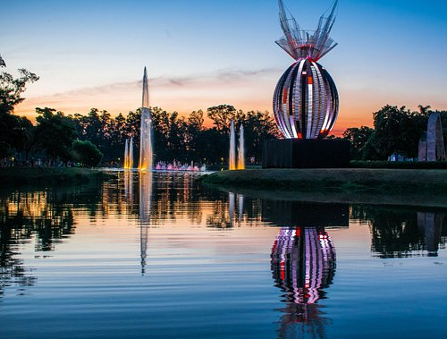
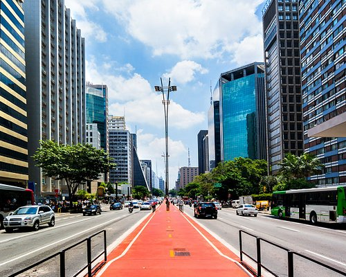
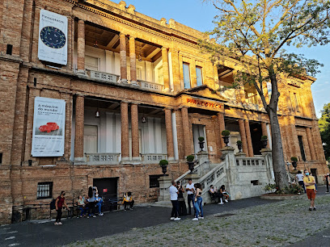
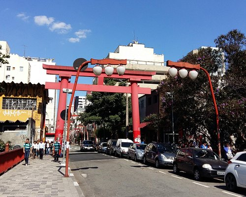
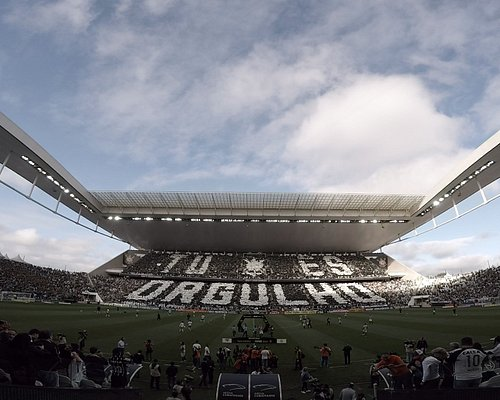
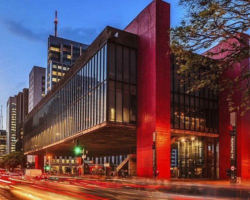
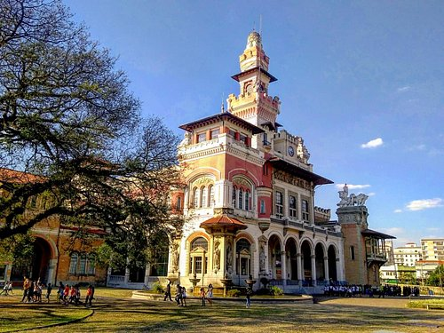
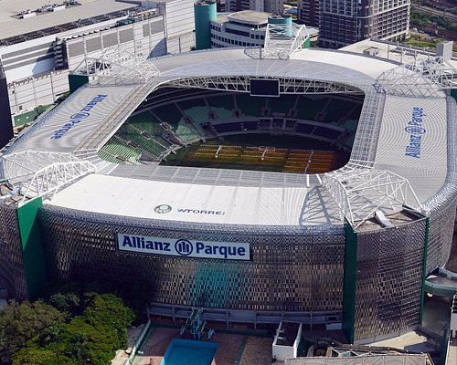
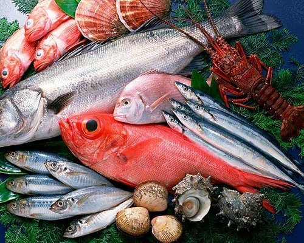
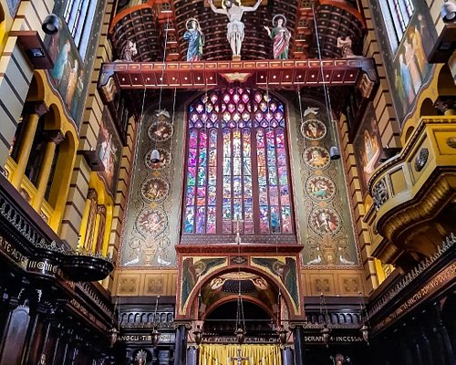

Viagens

Parque Ibirapuera
Parques
O Parque Ibirapuera é um parque urbano localizado na cidade de São Paulo, Brasil. Em 2017, foi o parque mais
visitado da América Latina, com aproximadamente 14 milhões de visitas, além de ser um dos locais mais fotografados
do mundo.

Avenida Paulista
Pontos de Interesse
A Avenida Paulista é o mais importante e simbólico logradouro do município de São Paulo, o mais populoso e rico do
Brasil. Está localizada no limite entre as zonas Centro-Sul, Central e Oeste; e em uma das regiões mais elevadas
da cidade, chamada de Espigão da Paulista.

Pinacoteca do Estado de São Paulo
Museus de arte
A Pinacoteca de São Paulo é um dos mais importantes museus de arte do Brasil e o mais antigo do Estado de São
Paulo, fundado em 1905 e regulamentado como museu público estadual desde 1911.

Bairro da Liberdade
Bairros
Um alto arco torii vermelho marca a entrada da Liberdade, a região japonesa da cidade, onde as ruas são decoradas
com lanternas. As opções gastronômicas incluem bares de sushi, lojas de ramen e barracas de macarrão yakisoba, bem
como restaurantes chineses e coreanos. As lojas de presentes e os supermercados vendem quimonos, panelas e
iguarias asiáticas importadas, enquanto a Feira da Liberdade, aos domingos, tem acessórios e artesanato.

Neo Quimica Arena
Arenas e estádios
A Neo Química Arena, anteriormente denominada como Arena Corinthians, é um estádio de futebol localizado no
distrito de Itaquera, na Zona Leste do município de São Paulo, Brasil. De propriedade do Sport Club Corinthians
Paulista, sua capacidade é de 48.905 lugares, sendo o 11º maior estádio do Brasil.

Museu de Arte de São Paulo Assis Chateaubriand - MASP
Museus de arte
Museu de Arte de São Paulo Assis Chateaubriand é um centro cultural e museu de arte brasileiro fundado em 1947
pelo empresário e jornalista paraibano Assis Chateaubriand. Entre os anos de 1947 e 1990, o crítico e marchand
italiano Pietro Bardi assumiu a direção do MASP a convite de Chateaubriand.

Museu Catavento
Museus de ciências
O Museu Catavento é um museu interativo, inaugurado em 2009 com o propósito de se dedicar às ciências e sua
divulgação e está localizado no Palácio das Indústrias, em São Paulo, Brasil.

Allianz Parque
Arenas e estádios
Allianz Parque, conhecido popularmente em seus primórdios como Arena Palestra Itália ou Arena Palmeiras, é uma
arena multiuso construída para receber espetáculos, concertos, eventos corporativos

Mercado Municipal de São Paulo
Feiras livres
Prédio histórico com praça de alimentação e boxes que vendem frutas raras, verduras, legumes e laticínios.

Mosteiro de São Bento
Monastério
Igreja histórica ornamentada, missas com canto gregoriano e um monastério com padaria própria.